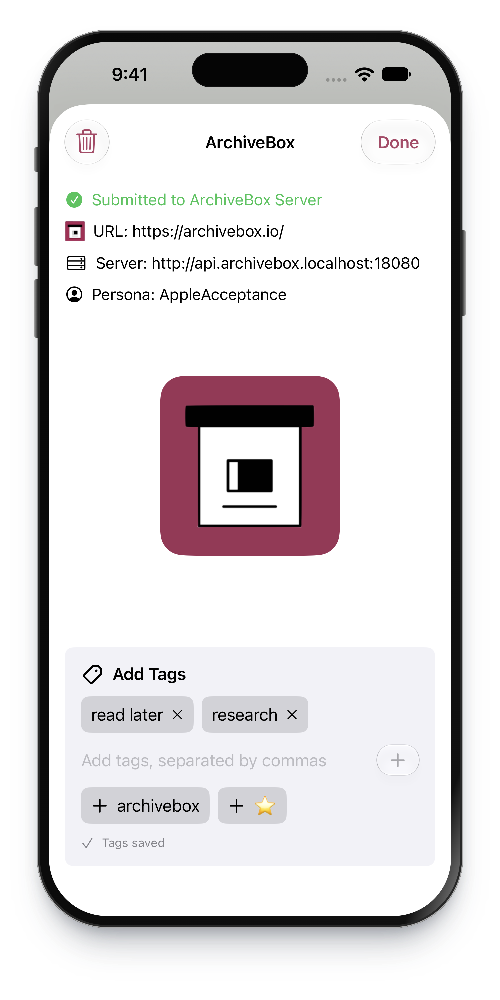

Saves tabs in seconds, stores them for decades
Collect bookmarks to read later, or preserve evidence for legal cases with verifiable captures from our TLSNotary signing plugin.
Open-source self-hosted web archiving
ArchiveBox saves websites, bookmarks, RSS feeds, social posts, media, source code, and research material in durable files like HTML, PDF, PNG, TXT, JSON, WARC, MP4, and SQLite.
View screenshots ↗ · View demo ↗


# Docker Compose is the recommended setup $ mkdir -p ~/archivebox/data && cd ~/archivebox $ curl -fsSL 'https://docker-compose.archivebox.io' > docker-compose.yml $ docker compose up -d --wait -> initialized ./data/index.sqlite3 ok listening on http://127.0.0.1:5797 $


Browse and save from any device.
Free, self-hosted, 0 analytics.
Why ArchiveBox
Collect bookmarks to read later, or preserve evidence for legal cases with verifiable captures from our TLSNotary signing plugin.
Organize your collection with tags and find what you need with full-text search powered by Sonic and ripgrep.
Automatically extract audio, video, git archives, forum posts, SEO metadata, and more into ordinary files you can open and reuse.
Tell your AI to inspect a page with abx-dl, pull an RSS feed every 24 hours, or orchestrate complex crawls through MCP and the REST API.
Who it is for
Save bookmarks, browser history, RSS feeds, social media, form content, videos, podcasts, music, photos, and personal knowledge collections.


Keep copies of articles, source material, and public records, even after the original pages change or disappear.

Support OSINT, social media research, AI-powered research agents, libraries, governments, and collection-building teams.

Get ArchiveBox
Choose how you want to run your archive. Docker Compose is recommended for most installs.
Open the TestFlight link on your iPhone or iPad to install ArchiveBox.
The first-run guide helps you choose a server, or select I already have a server. Scan the connection QR code from ArchiveBox Server.app on your Mac, or enter your server URL and API key.
In Safari or another app, choose Share → ArchiveBox. Your server saves the page so you can browse it from your phone.

Android beta APKs will appear here when published. Open the APK and allow installation from your browser if Android asks.
Use the first-run guide to choose a server, or select I already have a server. In Connection Settings, enter your server URL and API key, then verify the connection.
Choose Share → ArchiveBox from your browser or another app, add tags, and save. Keep your server reachable to save and browse pages.
 ArchiveBox.app
ArchiveBox.app Applications
Applications
Choose Set up on this Mac in the setup guide, then download and open ArchiveBox Server.app. Already have a server? Connect with its URL and API key.
Use the Web UI, REST API, or CLI. Connect the mobile app, browser extension, and other clients using your server URL and API key.
ArchiveBoxDownload Docker Desktop and start it on your computer. Keep Docker running while you use ArchiveBox.
Open the installer, launch ArchiveBox, and create your administrator account. The first launch prepares your local collection.
 Docker Desktop
Docker Desktop
Download Docker Desktop and start it on your computer. Keep Docker running while you use ArchiveBox.
Open the installer, launch ArchiveBox, and create your administrator account. The first launch prepares your local collection.
Docker ComposeArchiveBoxdocker-compose.ymlCompose keeps your settings in one file and makes updates easier. Install Docker, then create a directory and get the config.
mkdir -p ~/archivebox/data && cd ~/archivebox
curl -fsSL 'https://docker-compose.archivebox.io' > docker-compose.ymldocker compose pull
docker compose up -d --waitA new collection initializes automatically.
Open the admin UI to create your first admin account and finish the setup wizard. On a remote server, open /admin/ on its hostname or IP instead.
docker compose exec archivebox archivebox add 'https://example.com'Have a Compose file? Convert it to docker run commands with Decomposerize.
Install Docker first.
mkdir -p ~/archivebox/data && cd ~/archivebox/data
docker run -d --name archivebox -v "$PWD:/data" -p 5797:5797 archivebox/archivebox:devOpen the admin UI to create your first admin account and finish the setup wizard. On a remote server, open /admin/ on its hostname or IP instead.
docker exec archivebox archivebox add 'https://example.com' pip / uvArchiveBox
pip / uvArchiveBoxInstall uv first.
uv tool install --python 3.13 --prerelease explicit --upgrade 'archivebox>=0.9.0rc0,<0.10'
archivebox versionmkdir -p ~/archivebox/data && cd ~/archivebox/data
archivebox init
archivebox install
archivebox server 0.0.0.0:5797Open the admin UI to create your first admin account and finish the setup wizard. On a remote server, open /admin/ on its hostname or IP instead.
With Python 3.13 installed, create a virtual environment and install ArchiveBox:
python3.13 -m venv ~/.venvs/archivebox
source ~/.venvs/archivebox/bin/activate
python -m pip install --upgrade 'archivebox>=0.9.0rc0,<0.10'
archivebox versionThen follow steps 2 and 3 above. In each new terminal, run source ~/.venvs/archivebox/bin/activate before using archivebox.
 aptArchiveBox
aptArchiveBoxecho 'deb [trusted=yes] https://archivebox.github.io/debian-archivebox dev main' | sudo tee /etc/apt/sources.list.d/archivebox.list
sudo apt update
sudo apt install archivebox
(cd /tmp && archivebox version)mkdir -p ~/archivebox/data && cd ~/archivebox/data
archivebox init
sudo archivebox install
archivebox server 0.0.0.0:5797Open the admin UI to create your first admin account and finish the setup wizard. On a remote server, open /admin/ on its hostname or IP instead.
 HomebrewArchiveBox
HomebrewArchiveBoxInstall Homebrew first. Run these commands as your normal user, without sudo.
brew tap archivebox/archivebox
brew trust archivebox/archivebox
brew install archivebox
archivebox versionmkdir -p ~/archivebox/data && cd ~/archivebox/data
archivebox init
archivebox install
archivebox server 0.0.0.0:5797Open the admin UI to create your first admin account and finish the setup wizard. On a remote server, open /admin/ on its hostname or IP instead.
 Arch Linux
Arch Linux FreeBSD
FreeBSD NixArchiveBox
NixArchiveBoxCommunity packages may lag behind the Docker and Python releases.
yay -S archiveboxFreeBSD (uv shortcut)
curl -fsSL 'https://get.archivebox.io' | bashnix-env --install archiveboxguix install archiveboxFollow your package’s setup instructions, then use the CLI usage guide to initialize and manage your archive.
curl get.archivebox.io
| shArchiveBoxcurl -fsSL 'https://get.archivebox.io' | bashYou can read the script before running it.
Follow the installer’s instructions to start using your collection.
Open the admin UI to create your first admin account and finish the setup wizard. On a remote server, open /admin/ on its hostname or IP instead.
ArchiveBoxFollow the platform’s installation guide, configure persistent storage, then open the app to finish setup.
For TrueNAS, see the README’s platform notes before choosing an integration.
ArchiveBoxCheck the provider’s current plans, supported versions, and storage options.
Use the provider’s ArchiveBox deployment flow, then open your instance to create an admin account. For an unmanaged VPS, follow the Docker Compose quickstart on your server.

 Save from your browser
Save from your browserOpen the extension’s Configuration page, enter your server URL and API key, then test the connection. Use one of the server install tabs if you don’t have a server yet.
Open a page, click the ArchiveBox extension, and add your tags. You can also import bookmarks and history from the extension’s options.
ArchiveBox can be configured via the admin UI, CLI, ArchiveBox.conf, or by importing config and cookies from Chrome / other browsers. The same configuration model works in Docker, Docker Compose, bare-metal installs, scheduled jobs, and one-off CLI runs.
Use TIMEOUT for slow networks, CHECK_SSL_VALIDITY for sites with broken certificates, PUBLIC_INDEX, PUBLIC_SNAPSHOTS, and PUBLIC_ADD_VIEW for publishing policy, and browser user-agent settings for sites that block obvious bots.
$ archivebox config # view full config $ archivebox config --get CHROME_BINARY $ archivebox config --set TIMEOUT=240 $ archivebox config --set PUBLIC_INDEX=False $ env CHROME_BINARY=chromium archivebox add 'https://example.com'
ArchiveBox uses standard tools like Chrome or Chromium, wget, curl, yt-dlp, git, SingleFile, Readability, and article parsers. Docker bundles these dependencies for easier upgrades and better isolation; non-Docker installs can run archivebox install and archivebox --version to check what is available.
Inputs and outputs

Archive one URL at a time or schedule imports from bookmarks, browser history, RSS, JSON, CSV, TXT, SQL, HTML, Markdown, Pocket, Pinboard, Instapaper, Shaarli, Wallabag, and more.
Save links with our browser extension, or use Mac and iPhone share menus, Siri, and Shortcuts.

Import new URLs and capture snapshots on a schedule, then compare snapshots to see how sites have changed.

Capture each page in several reusable formats:
Use the same collection wherever you work:
Disk layout, exporting, and security
Your captures are ordinary HTML, images, PDFs, and media files. Open them from Finder, search them with any filesystem search tools, let AI agents browse them directly, and back them up as regular files.
Each snapshot has a folder for every capture method. HTML lives in folders such as dom/ and singlefile/; images, PDFs, and media have their own folders too.
Metadata is stored in SQLite and JSON, with snapshot metadata alongside the outputs. Your collection’s database and configuration live outside the snapshot folders, and your files remain readable without a hosted service.

You can export the archive index as static HTML, JSON, or CSV with archivebox list so collections can be reviewed without running the web server. Keep generated exports next to the archive/ folder so relative snapshot paths continue to work.
$ archivebox list --html --with-headers > index.html $ archivebox list --json --with-headers > index.json $ archivebox list --csv=timestamp,url,title > index.csv

Archive private URLs, paywalled pages, unlisted media, and Google Docs using an imported Chrome profile or a dedicated browser persona. Choose which captures stay private and who can access them.
Restrict public access with PUBLIC_INDEX=False, PERMISSIONS=private, and PUBLIC_ADD_VIEW=False, then create authenticated users with archivebox manage createsuperuser.

ArchiveBox uses a Chrome browser during archiving to run JavaScript and capture the rendered page.
ArchiveWeb.page records pages for replay, including their scripts and network responses. Replay captured pages with JavaScript using ReplayWeb.page, Webrecorder’s archive viewer.

ArchiveBox can use roughly 1 GB to 50 GB per 1,000 snapshots depending on media, video, audio, and extractor settings. Tune YTDLP_ENABLED and YTDLP_MAX_SIZE for media-heavy collections.
Keep index.sqlite3 on local storage or SSD when possible. Large archive/ folders can live on NFS, SMB, FUSE, S3-backed, or HDD storage, but Docker and fileshare setups may need ownership and root-squash adjustments. Avoid older filesystems like EXT3 or FAT for very large archives.
Background and motivation
ArchiveBox exists because link rot, platform churn, censorship, and disappearing media routinely erase useful knowledge. The project aims to make the web content you care about viewable with common software in 50 to 100 years, without requiring ArchiveBox or a hosted replay service to understand your files.

Centralized public archives are essential, but not every page belongs in a global public service. ArchiveBox lets individuals and organizations save public or private material they can access, keep it locally or within their institution, and decide what to publish case by case.
Run it as a Docker web app, use one-off CLI commands, or automate with APIs while keeping private and public data neatly separated. Use ordinary files for backups and exports.
Responsible archiving depends on your jurisdiction, your use case, and your publishing policy. ArchiveBox is a tool; operators remain responsible for handling private data, copyright, DMCA or GDPR requests, and local legal requirements.
Public instances should publish contact and removal information, avoid monetizing copied content, and review the security and publishing documentation before exposing snapshots to anonymous viewers.
Looking for specialized crawling, replay, or bookmark management? Explore these other web archiving projects.
{kind=link}